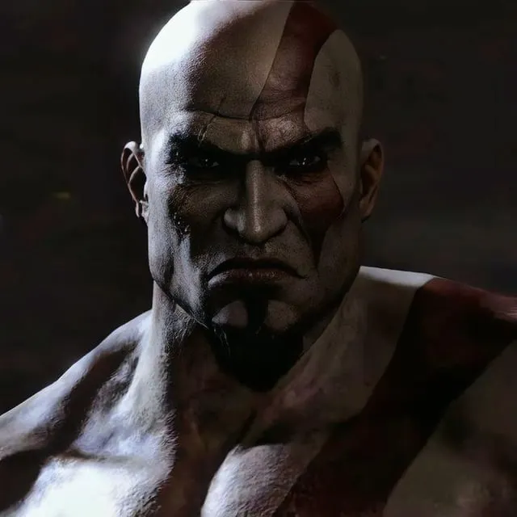

image pendingKratos
Spartan warrior, servant of Olympus All Greek titlesA Spartan warrior driven to serve the Olympian gods after a tragedy he can never quite outrun, whose service curdles into an open war against the pantheon that used him.